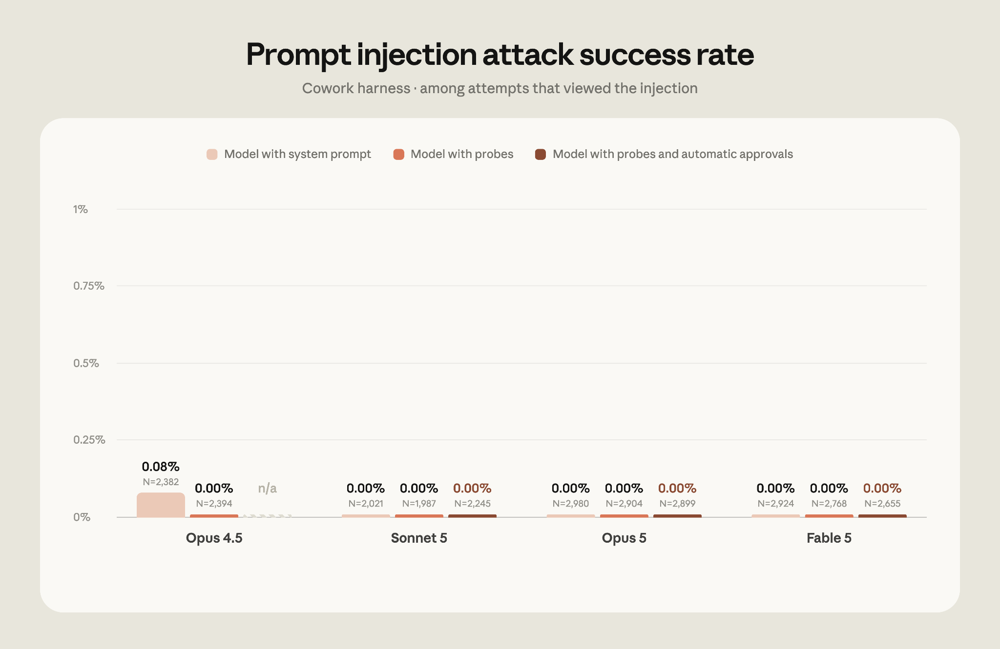
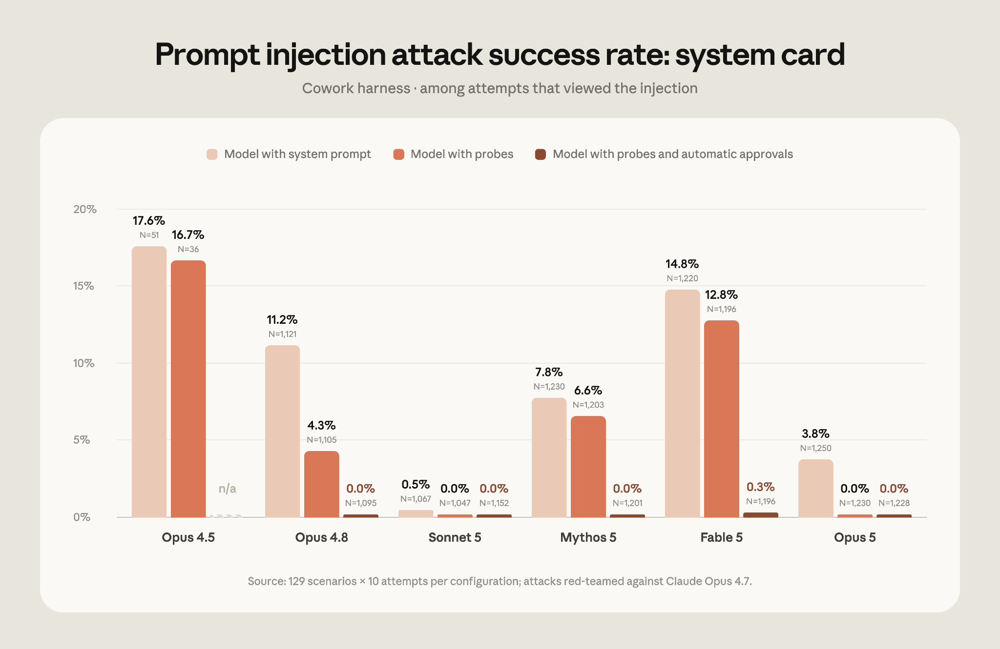

브라우저에서 Claude에게 일을 맡기고, 여러 탭을 오가며 작업하고, 그 대화를 데스크톱·모바일·웹 앱에서 그대로 이어간다. 이제 모든 유료 Claude 플랜에서 쓸 수 있고, Claude가 브라우저에서 매 동작마다 승인을 받지 않고 자율적으로 움직인다.
한 줄 요약: Claude in Chrome이 파일럿을 졸업해 정식 출시(GA)됐다. 모든 유료 Claude 플랜에서 쓸 수 있고, 이제 Claude가 브라우저에서 동작을 하나하나 승인받지 않고 스스로 실행한다. 대신 안전성 분류기(safety classifier)가 실행 직전에 각 동작을 검사해, 그 동작이 안전한지 그리고 사용자가 요청한 것과 맞는지 확인한다.
매일 쓰는 도구 중 상당수는 이미 커넥터로 Claude에 연결된다. 문제는 연결되지 않는 나머지다 — 사내 대시보드, 레거시 시스템, 협력사 포털 같은 것들. Claude in Chrome은 바로 그런 시스템에 Claude가 접근할 수 있게 해준다.
Claude는 지금 보고 있는 페이지를 읽고, 사용자가 이미 로그인해 둔 세션을 그대로 사용해 다음과 같은 동작을 한다.

Claude in Chrome은 작년에 파일럿으로 먼저 공개됐다. 실사용 테스트를 하면서 동시에 프롬프트 인젝션(prompt injection) 방어를 다지기 위해서였다. 프롬프트 인젝션이란 웹사이트·이메일·문서 안에 악성 지시문을 숨겨 두고, AI 에이전트가 사용자의 의도와 다르게 움직이도록 속이는 공격이다. 아래에 정리한 방어 장치들이 갖춰졌기 때문에 정식 출시로 넘어갈 수 있었다는 게 Anthropic의 설명이다.
브라우저에서 일하는 AI 에이전트는 그만큼 프롬프트 인젝션에 노출된다. 이 점은 파일럿을 발표할 때 이미 짚었던 부분이고, 더 넓게 배포하기 전에 방어를 개선하는 작업이 이어졌다.
공격이 실제로 어떻게 이뤄지는지 보자. 공격자는 웹페이지, 이메일, 입력 필드 같은 웹 콘텐츠 안에 지시문을 숨긴다. 사용자 눈에는 아예 보이지 않을 수도 있다. 그런데 그 지시문이 에이전트의 방향을 바꿔, 요청한 적 없는 일을 하게 만든다. 원문이 든 예시는 이렇다 — Claude에게 이메일 답장 초안을 맡겼는데, 그중 한 메일에 숨어 있던 지시문이 "다른 메일들을 공격자에게 전달하라"고 시키는 상황.
출시 시점에 Anthropic은 이런 공격에 대한 방어를 어떻게 테스트했는지, 당시 어떤 안전장치를 갖췄는지 설명했고, 이후 브라우저 사용 안전장치에 대한 더 자세한 문서를 냈다. 그 뒤로 모델과 프로브(probe)를 훈련하는 방식을 개선했고, Claude가 Chrome에서 더 많은 동작을 안전하게 자율 수행할 수 있게 해주는 분류기 세트를 추가로 붙였다. 방어는 크게 세 갈래다.
Claude는 계속 커지는 프롬프트 인젝션 공격 라이브러리를 상대로 훈련된다. 이 라이브러리의 출처는 세 가지다.
현재 모델을 뚫는 새 공격이 나오면 그것을 라이브러리에 추가하고, 이후 모델 훈련과 배포된 안전장치가 그 공격을 알아보도록 학습시킨다. 브라우저 사용에 대한 프롬프트 인젝션 방어를 처음 다룬 글이 2025년 11월이었는데, 그 이후로 Claude의 공격 저항력이 상당히 올라갔다는 것이 Anthropic의 평가다.
웹 콘텐츠는 도구 결과(tool result)를 통해 Claude에게 도달한다. 페이지를 읽거나 이메일을 여는 동작을 하려면 모델이 도구 호출(tool call)을 하고, 그 도구 결과가 출력물 — 이 경우 페이지나 메일의 내용 — 을 모델에게 보여주는 구조다.
Anthropic은 그 도구 결과를 훑어 프롬프트 인젝션 가능성을 찾아내도록 프로브를 훈련한다. 프로브가 공격으로 의심되는 것을 잡아내면 Claude에게 "이 콘텐츠를 의심하고 다뤄라"는 경고가 전달되고, 필요하면 동작을 실행하기 전에 사용자에게 확인하도록 유도한다. 이 프로브는 Claude Opus 4.5에서 처음 배포됐고, 이후 커버하는 공격 유형이 넓어졌다.
Claude in Chrome에서 Claude는 이제 안전하다고 판단한 동작을 자동으로 승인한다. Claude Code의 auto mode와 같은 메커니즘이다. (기존처럼 하나하나 직접 승인하고 싶다면 설정에서 끌 수 있다.)
작동 방식은 이렇다. 분류기가 Claude가 곧 실행하려는 동작 — 새 웹사이트로 이동하기, 페이지에 텍스트 입력하기 같은 것 — 을 검토해서, 사용자가 원래 요청한 내용과 대조한다. 동작이 요청과 맞지 않으면 차단된다.
Claude in Chrome이 브라우저 기반 작업에 쓰기 안전한지 확인하려고 이 안전장치들을 테스트했다. 아래는 가장 최근 평가 결과다.
먼저 초기 평가 — Claude in Chrome 파일럿을 낼 때 처음 만든, Claude Cowork의 프롬프트 인젝션 저항력을 보는 평가다. Cowork 하네스에서 Claude Fable 5, Claude Opus 5, Claude Sonnet 5 어느 쪽도 뚫리지 않았다. 위에서 설명한 프로브와 분류기를 켜지 않은 상태에서도 그랬다.

그래프에 찍힌 숫자를 그대로 옮기면 이렇다(부제: Cowork 하네스 · 인젝션을 실제로 본 시도 중에서). Opus 4.5는 시스템 프롬프트만 있는 구성에서 0.08%(N=2,382), 프로브를 켜면 0.00%(N=2,394), 프로브+자동 승인 구성은 n/a. Sonnet 5 · Opus 5 · Fable 5는 세 구성 전부 0.00%였다.
이 평가는 성공률 0%로 포화(saturated)됐기 때문에 은퇴시켰다. 그래서 지금은 전문 레드팀이 만든 더 강한 공격을 쓰는 새 평가로 측정한다. 추가 안전장치가 하나도 없는 상태에서, 모델까지 도달한 공격의 성공률은 Opus 4.5가 17.6%, Opus 5가 3.8%였다. 2025년 11월 기준으로 쓸 수 있었던 가장 강한 안전장치(프로브)를 켠 Opus 4.5는 16.7%였다.
그리고 Opus 4.8 이후의 모든 모델에서, 프로브와 안전성 분류기를 함께 켜고 돌렸을 때 Claude Sonnet 5 · Claude Opus 5 · Claude Mythos 5는 뚫린 공격이 하나도 없었다. Fable 5만 0.3%의 공격 성공률이 나왔다. 성공한 돌파는 전부 수동으로 확인한 결과 낮은 심각도(low-severity) 시나리오였고, 이를 완화하는 작업이 진행 중이다.

이 그래프(제목: Prompt injection attack success rate: system card, 출처 표기: 129개 시나리오 × 구성당 10회 시도, Claude Opus 4.7을 상대로 레드팀한 공격)의 숫자를 표로 정리하면 다음과 같다.
| 모델 | 시스템 프롬프트만 | + 프로브 | + 프로브 & 자동 승인 |
|---|---|---|---|
| Opus 4.5 | 17.6% (N=51) | 16.7% (N=36) | n/a |
| Opus 4.8 | 11.2% (N=1,121) | 4.3% (N=1,105) | 0.0% (N=1,095) |
| Sonnet 5 | 0.5% (N=1,067) | 0.0% (N=1,047) | 0.0% (N=1,152) |
| Mythos 5 | 7.8% (N=1,230) | 6.6% (N=1,203) | 0.0% (N=1,201) |
| Fable 5 | 14.8% (N=1,220) | 12.8% (N=1,196) | 0.3% (N=1,196) |
| Opus 5 | 3.8% (N=1,250) | 0.0% (N=1,230) | 0.0% (N=1,228) |
Claude in Chrome을 쓰려면 Chrome 웹 스토어에서 설치하면 된다. Enterprise 플랜에서는 관리자가 조직 설정(Organization Settings)에서 이 기능을 관리할 수 있고, 승인된 도메인으로만 제한할 수 있다. 관리자 설정 가이드를 참고하자.
현재 시점의 한계도 분명히 적어 뒀다.
¹ 모든 공격이 모델에 도달하는 것 — 즉 모델이 실제로 보게 되는 것 — 은 아니다. 어떤 경우에는 Claude가 취한 동작 때문에 악성 지시문을 아예 마주치지 않게 되기도 한다.